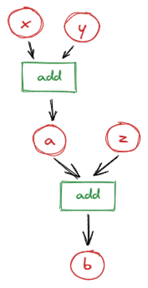
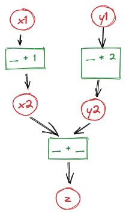
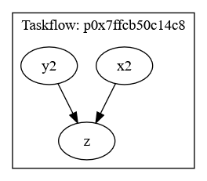
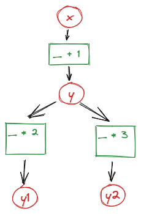
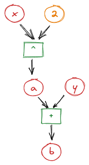
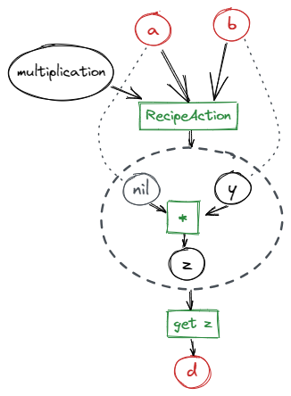

Usage¶
Target audience: C++ developers who want static features, and Python users using dynamic features via the Python bindings. Assumes basic familiarity with C++/Python, templates, and Lua for dynamic mode.
If you are interested in using grunk as a backend for your C++ code, the section on static mode and the section on parallel execution are a good starting point.
If you plan to use grunk entirely for scripting and manipulating grunk recipes, these sections can be skipped, because the python bindings only support grunk’s dynamic mode and the reading and writing of grunk recipes to file. However, to fully grasp grunk’s caching, lazy evaluation and automatic invalidation logic, it may be beneficial not to do so.
Static Mode¶
Static mode summary: compile-time type knowledge and function bindings. Use static mode when all types and functions are known at compile time and you need lazy evaluation, caching, and the option for parallel execution (C++ only).
Lazy evaluation and Caching¶
As an introductory example, consider the following function
that adds two doubles and is a bit talkative about it.
double add(double const& l, double const r)
{
std::cout << "Adding " << l << " and " << r << std::endl;
return l + r;
};
grunk lets you delay the evaluation of the function until the result is queried.
#include <grunk/grunk.hpp>
auto o = grunk::action(&add, 1.2, 40.8);
o.set_id("o");
std::cout << "Until here, nothing has happened" << std::endl;
std::cout << o.value() << std::endl;
std::cout << o.value() << std::endl;
Until here, nothing has happened
Adding 1.2 and 40.8
42
42
In the first line no computation takes place, the function add is not evaluated.
Instead,
a new Action instance o is created using grunk::action.
The arguments are a function pointer &add and two arguments
that shall be passed into the function. With set_id("o") we add an id to the output feature.
Internally, o depends on the action created
by grunk::action; that action in turn depends on two Feature<double> inputs holding the values 1.2 and 40.8. With this dependency
information, grunk can delay the computation to the point when o.value()
is called. At this time, the function must be evaluated and the result, 42, is
stored in o. The next time the value is queried, the compuation is not repeated,
the cached result is returned. This is called lazy evaluation, because computations
are delayed until the last point possible and only necessary calculations are performed.
Automatic invalidation¶
Let’s modify the above code example a bit.
grunk::Feature x(1.2).with_id("x");
grunk::Feature y(15.2).with_id("y");
grunk::Feature z(25.6).with_id("z");
auto a = grunk::action("a", &add, x, y);
auto b = grunk::action("b", &add, a, z);
We have created three independent features x,y,z. The feature
a is the result of adding x and y and the feature b is the
result of adding a and z.

If we would now query the value of a, b would
not be computed, because a does not depend on b. If instead,
we were to query the value of b, a would have to be computed first.
Let’s try this:
std::cout << b.value() << std::endl;
Adding 1.2 and 15.2
Adding 16.4 and 25.6
42
If we now were to change z, b would have to be recomputed the
next time its value is queried. a which does not depend on z
does not need to be recomputed.
z.change_value() = 24.2;
std::cout << "No calculations done until this point" << std::endl;
std::cout << b.value() << std::endl;
No calculations done until this point
Adding 16.4 and 24.2
40.6
If we were to change x, both a and b have to be re-computed and
grunk knows this:
x.change_value() = 2.6;
std::cout << "No calculations done until this point" << std::endl;
std::cout << b.value() << std::endl;
No calculations done until this point
Adding 2.6 and 15.2
Adding 17.8 and 24.2
42
This functionality is called automatic invalidation: Only features that depend on a changed feature are invalidated.
Caching & invalidation (summary)
Querying a feature’s value triggers evaluation and fills caches for that feature and all computed ancestors required for the result.
Changing an independent input invalidates only those features that depend (directly or transitively) on that input.
Re-querying a feature after an invalidation recomputes only the invalidated portions of the tree.
Lazy evaluation and automatic invalidation come with the trade-off of having to store dependency information, but it pays off for big workflows with many computationally expensive functions. This becomes especially apparent in explorative design or automated optimization workflows, where input parameters can be expected to be altered frequently.
Conceptually, the Feature<double> correspond to a node in a directed acyclic graph
(DAG). This graph is often called a feature tree. grunk retains these feature trees
by retaining parent-child relations in the Feature<T> instances.
This mode of operation is also called static mode, because all types and functions are known at compile time. If you want to use types and functions provided by plugins which are loaded at run time, you have to use grunk’s dynamic mode, see the section on dynamic mode.
Classes and Member Functions¶
The concept works with any kind of type and function. The only requirement for the functions is, that they are referentially transparent, which means they may not alter their inputs (in other words: no functions that mutate their arguments or rely on hidden global state).
#include <grunk/grunk.hpp>
struct MyScalar {
double get() const { return v; }
double v;
};
auto x = grunk::feature(MyScalar{17.}).with_id("x");
auto y = grunk::action(&MyScalar::get, x).with_id("y");
// prints 17
std::cout << y.value().v << std::endl;
x.change_value().v = 25.;
// prints 25
std::cout << y.value().v << std::endl;
Parallel Execution¶
Consider the following grunk recipe:
#include <grunk/grunk.hpp>
auto x1 = grunk::feature(1.);
auto x2 = grunk::action([](double v){ return v + 1.; }, x1);
x2.set_id("x2");
auto y1 = grunk::feature(2.);
auto y2 = grunk::action([](double v){ return v * 2.; }, y1);
y2.set_id("y2");
auto z = grunk::action([](double a, double b){ return a + b; }, x2, y2);
z.set_id("z");

Setting aside that parallel execution is not reasonable for this example, note that x2 and y2 can be computed in parallel, because they do not depend on each other.
Since grunk tracks parametric dependencies, it can use this information to deduce which parts of a parametric tree can be executed in parallel - provided that the functions themselves are thread-safe.
Thread-safety
Parallel execution requires that all user functions invoked are thread-safe and side-effect free. Exceptions thrown during parallel evaluation may be propagated to the caller; consult the API for exact exception semantics.
To do so, we can use the ParallelExecutor:
grunk::ParallelExecutor executor(z);
executor.run();
You can also specify the number of threads to use for the parallel execution:
int nthreads = 2;
grunk::ParallelExecutor executor(nthreads, z);
executor.run();
Parallel execution will use multiple threads to evaluate independent parts of the tree; any exceptions thrown during evaluation will propagate to the calling thread.
The parallel executor uses the taskflow library under the hood. If you want to see the actual task graph that gets executed, you can dump it to a file:
std::string graphviz = executor.get_taskflow().dump();
std::ofstream fout("my_taskflow.dot");
fout << graphviz;

The class ParallelExecutor takes a set of features as input and executes all computations necessary to evaluate these features in parallel, if possible.
#include <grunk/grunk.hpp>
auto x = grunk::feature(1.).with_id("x");
auto y = grunk::action([](double v){ return v + 1.; }, x).with_id("y");
auto y1 = grunk::action([](double v){ return v * 2.; }, y).with_id("y1");
auto y2 = grunk::action([](double v){ return v * 3.; }, y).with_id("y2");
grunk::ParallelExecutor executor(y1, y2);

Note, that parallel execution is only possible in static mode. Dynamic mode relies on Lua. Like most scripting languages, Lua is single-threaded and does not support parallel execution.
Dynamic Mode¶
Dynamic mode summary: runtime (Lua-based) typing and plugin-driven behavior. Use dynamic mode when types or functions are provided by plugins or when scripting from Python/Lua; note that Lua-based dynamic mode is single-threaded and does not support the ParallelExecutor.
grunk’s dynamic mode uses Lua as a dynamic scripting language to work with types and functions provided by plugins. The implementation is based on the sol2 library and a grunk::object is just an alias for a sol::object.
Before we dive into the parametric trees of grunk’s dynamic mode, let’s first see how to interact with the underlying Lua state.
Interacting with the Lua state¶
Grunk’s dynamic mode is the basis for using grunk with plugins. It relies on a runtime reflection system and a type-erased object called grunk::object. This allows grunk to work with any kind of type and function provided by plugins, without the need to know about them at compile time.
An instance of grunk::state is used to manage the dynamic state and register types and functions in an internal Lua state.
In practice, functions and types are registered in a grunk::state via grunk plugins, see the next section section. For simplicity, assume for now that the type MyScalar and a function add are registered in the grunk state and can be used in the feature tree.
#include <grunk/grunk.hpp>
struct MyScalar
{
double get() const { return v; }
double v;
};
grunk::state grunk;
grunk.register_type<MyScalar>("MyScalar")
.add_constructor<double>()
.add_member_function("get", &MyScalar::get);
grunk.register_function(
"add",
[](MyScalar const& l, MyScalar const& r){
return l + r;
}
);
Now, we can use the registered type and function in a Lua script.
#include <grunk/grunk.hpp>
grunk::state grunk;
/* type and function registration omitted here */
auto env = grunk.create_env();
env.eval(R"(
local x = MyScalar.new(17.)
local y = MyScalar.new(25.)
local z = add(x,y)
result = z:get() ^ 2 + 5
)");
std::cout << env.get<double>("result") << std::endl;
import grunk
# type and function registration omitted here
env = grunk.create_env()
env.eval("""
local x = MyScalar(17.)
local y = MyScalar(25.)
local z = add(x,y)
result = z:get() ^ 2 + 5
""")
print(env.get("result").as_float())
The script passed to env.eval can be any valid Lua code. The function env.get can be used to retrieve any variable from the Lua state and cast it to a type that we can deal with in C++ or Python.
We can retrieve the variable as a grunk::object and then use the as function to cast it back to the actual type.
Conversely, we can also create a grunk::object from a C++ type and pass it to the Lua state.
Short note on evaluation and caching
Calling
env.evaland invoking:value()inside the parametric environment triggers evaluation and fills caches for the parametric sub-tree used to compute that value. Subsequent changes to input features (from Lua or from C++/Python viaget_feature/set_value) will invalidate dependent caches and cause recomputation at the next:value()call.
#include <grunk/grunk.hpp>
grunk::state grunk;
/* type and function registration omitted here */
auto env = grunk.create_env();
env["x"] = MyScalar(17.);
env["y"] = MyScalar(25.);
env.eval("result = add(x,y):get()");
std::cout << env.get<double>("result") << std::endl;
The usage from Python is very similar, with a few minor caveats.
Firstly, python types cannot be registered in the grunk state, because they are not known to C++. Instead, we can only work with native Lua types and types that are registered in the grunk state via plugins.
Secondly, for convenience, the grunk module comes with a default grunk::state instance and the member functions of grunk::state are exposed as free functions. So from python we have the choice of working with the default state or creating our own state and working with it.
import grunk
# use the default state
env = grunk.create_env()
# or create a new state called grnk and use it
grnk = grunk.state()
env2 = grnk.create_env()
env and env2 are independent environments with a shared Lua state. They share the same registered types and functions.
Dynamic Features and Actions in Lua¶
Notice that in the example above, we have only used the functions in a dynamic context. We did not make use of grunk’s dependency tracking. The following example shows how to use grunk’s dynamic mode together with the dependency tracking of features and actions.
We can create a parametric environment from our grunk::state. Within this environment, all functions are decorated as a grunk::Action, a function wrapper that tracks the dependency.
#include <grunk/grunk.hpp>
grunk::state grunk;
auto env = grunk.create_parametric_env();
env.eval(R"(
x = grunk.feature(2.)
y = grunk.feature(38.)
a = x ^ 2
b = a + y
b1 = b:value()
x:set_value(1)
b2 = b:value()
)");
// prints 42
auto b1 = env.get("b1").as<double>();
std::cout << "b1 = " << b1 << std::endl;
// prints 39
auto b2 = env.get("b2").as<double>();
std::cout << "b2 = " << b2 << std::endl;
auto y = env.get_feature("y"); // short for env.get<grunk::DynamicFeature>("y")
y.set_value(41);
// prints 42
auto b3 = env.get_feature("b").value().as<double>();
std::cout << "b3 = " << b3 << std::endl;
import grunk
env = grunk.create_parametric_env()
env.eval("""
x = grunk.feature(2.)
y = grunk.feature(38.)
a = x ^ 2
b = a + y
b1 = b:value()
x:set_value(1)
b2 = b:value()
""")
# prints 42
b1 = env["b1"].as_float()
print(f"b1 = {b1}")
# prints 39
b2 = env["b2"].as_float()
print(f"b2 = {b2}")
y = env.get_feature("y")
y.set_value(41)
# prints 42
b3 = env.get_feature("b").value().as_float()
print(f"b3 = {b3}")

Observe carefully how the lazy evaluation and automatic invalidation logic works here. The first time b:value() is called from the Lua script, the value of the feature is queried and the parametric tree is evaluated. The caches of every feature of the underlying parametric tree are filled. Subsequently the value of x is changed, which invalidates a and b. The next time b:value() is called, the parametric tree is reevaluated and the value of b changes.
Short summary: calling :value() inside the running Lua script triggers evaluation and fills caches for that parametric tree; later changes to inputs will invalidate dependent caches and cause recomputation on the next :value() call.
In the following, we are retrieving the feature y from the grunk::state and manipulate it in C++/Python. As we change the value, the cache of a remains intact, but the cache of b is invalidated. Querying the value of b again (this time from C++/Python), only part of the feature tree is re-evaluated and the value of b changes again.
Using Custom Types¶
Let us examine how a parametric tree with custom types from plugins would look like. Assume that we have a plugin that registers the type MyScalar and a function add that takes two MyScalars and returns their sum.
For brevity, we will only show the Lua script that can be executed in a grunk parametric environment.
When we want to construct a custom type as part of the feature tree, we have two options. We can either use the constructor of the type as an action, which means that the constructed object depends on the input features. Or we can forward the constructor arguments to grunk::feature by using the new_feature method, which means that the constructed object is an independent feature.
local a = grunk.feature(1.)
x = MyScalar.new(a) -- ctor as action: x depends on a
y = MyScalar.new(2.) -- ctor as action with argument conversion from constant: y depends on unnamed Feature(2.)
z = MyScalar.new_feature(3.) -- forwards ctor args to grunk::feature: z is independent feature
Lua does not know about the member functions that can be invoked on a grunk::DynamicFeature, which is an alias for grunk::Feature<grunk::object>. Therefore, we can not directly call member functions of the underlying type using the : operator.
We have two options for this:
We can use the method
asto obtain a Lua usertype that exposes the member functions as actions.We can call the metatable method MyScalar.val and pass the feature as an argument.
The following code snippet shows both options.
local b = x:as(MyScalar).val() - MyScalar.val(y)
print(b:value()) -- prints -1, because x has the value 1 and y has the value 2
Dynamic Features and Actions in C++/Python¶
In the examples so far, the dynamic mode was used from within a Lua script. There are two kinds of environments. grunk::create_env returns an environment where all registered functions and methods are exposed as is, grunk::create_parametric_env returns an environment where all registered functions and methods are exposed as actions, meaning they are decorated functions that register the parametric dependency and delay the function evaluation. There is no need to explicitly wrap the method in a grunk::action as in static mode.
However, this syntax is available for dynamic mode as well, without using Lua environments.
Instead of passing a function or function pointer to grunk::action, we can
pass a string identifier. We can choose between . and : as separator.
#include <grunk/grunk/hpp>
auto grunk = grunk::state;
/* type and function registration omitted here */
auto a = grunk.feature(1.);
auto x = grunk.action("MyScalar:new", a); // ctor as action: x depends on a
auto y = grunk.action("MyScalar.new", 2.); // ctor as action with argument conversion from contant: y depends on Feature(2.)
auto z = grunk.feature("MyScalar", 3.); // forwards ctor args to grunk::feature: z is independent feature
auto b = grunk.action("MyScalar.val", x) - grunk.action("MyScalar:val", y);
// prints -1
std::cout << b.value().as<double>() << std::endl;
import grunk
# type and function registration omitted here
a = grunk.feature(1.)
x = grunk.action("MyScalar:new", a) # ctor as action: x depends on a
y = grunk.action("MyScalar.new", 2.) # ctor as action with argument conversion from contant: y depends on Feature(2.)
z = grunk.feature("MyScalar", 3.) # 3 forwards ctor args to grunk::feature: z is independent feature
b = grunk.action("MyScalar.val", x) - grunk.action("MyScalar:val", y)
# prints -1
print(b.value().as_float())
Mixing static and dynamic mode in C++¶
Remember, that static mode is only available in C++.
In C++ we can pass static features to dynamic functions. The conversion is handled under the hood.
grunk::state grunk;
auto add = [](int l, int r){ return l+r; };
grunk.register_function("add", &add);
auto a = grunk::feature(1); // type of a: Feature<int>
auto b = grunk.feature(2); // type of b: Feature<object>
auto c = grunk.action("add", a, b); // type of d: Feature<int>
// Until here, add has not been called, but only the DAG assembled,
// that represents the dependency of the features. Now let's trigger
// evaluation by querying the value of e.
assert(c.value().as<int> == 3);
// After evaluation all results, including intermediate results are
// cached. A second query of e would just retrieve the value from
// cache
// resetting an independent input feature invalidates all dependent
// nodes. Resetting c will invalidate e, but the cache of d remains
// valid
b.set_value(4);
// A new query of e will trigger evaluation of all invalid nodes.
assert(c.value() == 5);
Containers¶
Imagine you have a function that expects an std::vector.
struct Foo {
int i;
};
Foo add(std::vector<Foo> const& v) {
return std::accumulate(
v.begin(),
v.end(),
Foo{0.},
[](auto const& l, auto const& r){ return Foo{l.i + r.i}; }
);
}
If we have several grunk::DynamicFeatures, each wrapping a Foo instance, we can create a vector std::vector<grunk::DynamicFeature>.
But the action decorator for add expects a single grunk::DynamicFeature` wrapping an std::vector<Foo>.
To perform the conversion, the type Foo has to be registered with the
with_std_vector method. This adds a method as_vec to the metatable of the usertype of Foo, which is an action that unwraps the input features, then inserts them in an std::vector and wraps it in a grunk::DynamicFeature, all the while properly registering the parametric dependency of the inputs to the output vector.
#include <grunk/grunk.hpp>
auto grunk = grunk::state();
grunk.register_type<Foo>("Foo")
.add_constructors([](int i){ return Foo{i}; })
.with_std_vector();
grunk.register_function("add", &add);
auto env = grunk.create_parametric_env();
env.eval(R"(
x1 = Foo.new_feature(5)
x2 = Foo.new_feature(7)
x3 = Foo.new_feature(9)
res = add(Foo.as_vec(x1, x2, x3))
)");
auto res = env.get_feature("res");
// prints 21
std::cout << res.value().as<Foo>().i << std::endl;
auto x1 = env.get_feature("x1");
x1.set_value(Foo{26});
// prints 42
std::cout << res.value().as<Foo>().i << std::endl;
Currently, std::vector is the only C++ container supported by grunk.
Consider a CAD plugin providing the following functions:
Curve interpolate(std::vector<Point> const&);
Surface interpolate(std::vector<Curve> const&);
If both Point and Curve are registered in the dynamic type system using the with_std_vector method, we can generate parametric models that look like the following.
// ... omitted
auto points3 = grunk.action("my_cad.Point.as_vec", pnt31, pnt32, pnt33, pnt34).with_id("points3");
auto curve1 = grunk.action("my_cad.interpolate", points1).with_id("c1");
auto curve2 = grunk.action("my_cad.interpolate", points2).with_id("c2");
auto curve3 = grunk.action("my_cad.interpolate", points3).with_id("c3");
auto curves = grunk.action("my_cad.Curve.as_vec", curve1, curve2, curve2)
auto surface = grunk.action("my_cad:interpolate", curves).with_id("s");
# ... omitted
points3 = grunk.action("my_cad.Point.as_vec", pnt31, pnt32, pnt33, pnt34).with_id("points3")
curve1 = grunk.action("my_cad.interpolate", points1).with_id("c1")
curve2 = grunk.action("my_cad.interpolate", points2).with_id("c2")
curve3 = grunk.action("my_cad.interpolate", points3).with_id("c3")
curves = grunk.action("my_cad.Curve.as_vec", curve1, curve2, curve2)
surface = grunk.action("my_cad:interpolate", curves).with_id("s")
uses:
grunk: 0.5.0
my_cad: 1.0.0
parameters:
# ... omitted
steps: |
-- ... omitted
points3 = my_cad.Point.as_vec(pnt31, pnt32, pnt33, pnt34)
c1 = my_cad.interpolate(points1)
c2 = my_cad.interpolate(points2)
c3 = my_cad.interpolate(points3)
s = my_cad.interpolate(my_cad.Curve.as_vec(c1, c2, c3) )
Modules¶
A grunk module is a named table of Lua functions, backed by a plain Lua script, that is registered
directly on a grunk::state - the same place that register_type and register_function put
their symbols. Use run_module_script (or run_module_file, to load from disk) to define a
module:
#include <grunk/grunk.hpp>
grunk::state grunk;
grunk.run_module_script(
"mymod",
R"(
function less_than(l,r)
return l < r
end
function if_then_else(cond, i, e)
if cond then
return i
else
return e
end
end
)"
);
// a plain environment sees plain, uninstrumented functions
auto env = grunk.create_env();
env.eval(R"(
a = 2
b = 3
c = mymod.if_then_else(mymod.less_than(a,b), 5, 32)
)");
import grunk
grunk.run_module_script(
"mymod",
"""
function less_than(l,r)
return l < r
end
function if_then_else(cond, i, e)
if cond then
return i
else
return e
end
end
"""
)
# a plain environment sees plain, uninstrumented functions
e = grunk.create_env()
e.eval("""
a = 2
b = 3
c = mymod.if_then_else(mymod.less_than(a,b), 5, 32)
""")
In a parametric environment, every function exported by a module is decorated into an action, just like any other symbol registered on the state, so calls into the module integrate with grunk’s dependency tracking:
auto penv = grunk.create_parametric_env();
penv.eval(R"(
a = grunk.feature(2)
b = grunk.feature(3)
c = mymod.if_then_else(mymod.less_than(a,b), 5, 32)
)");
auto c = penv.get_feature("c");
std::cout << c.value().as<int>() << std::endl;
auto a = penv.get_feature("a");
a.set_value(4);
std::cout << c.value().as<int>() << std::endl;
// remove the module once done with it
grunk.clear_module("mymod");
pe = grunk.create_parametric_env()
pe.eval("""
a = grunk.feature(2)
b = grunk.feature(3)
c = mymod.if_then_else(mymod.less_than(a,b), 5, 32)
""")
c = pe.get_feature("c")
assert c.value().as_int() == 5
a = pe.get_feature("a")
a.set_value(4)
assert c.value().as_int() == 32
# remove the module once done with it
grunk.clear_module("mymod")
If you need to reload a module or replace its contents, call clear_module(name) first - this
removes the module from the original Lua environment as well as from the decorated cache, so that
subsequent parametric environments will not see stale, cached decorated values. Calling
run_module_script/run_module_file on a module that already exists reuses the existing table
instead, so several scripts or files can incrementally populate the same module.
Module functions are particularly useful to instantiate objects and modify them using non-const setters. grunk disallows any function that can potentially alter its inputs. This includes any function that takes a non-const reference as argument and, in consequence, all non-const member functions. This is an important safeguard against dependency cycles in the feature tree: as part of the philosophy of grunk, information flows from inputs to outputs only, and any feature in the tree is influenced only by its predecessors.
This comes with a heavy restriction, since non-const members, e.g. setters, are frequently used in object-oriented programs. Consider the following class:
struct Pnt
{
Pnt() = default;
inline void set_x(double x_) { x = x_; }
inline void set_y(double y_) { y = y_; }
inline void set_z(double z_) { z = z_; }
double x{0.};
double y{0.};
double z{0.};
};
Instantiating an instance of Pnt with grunk and then modifying it using set_x via
grunk::action is not allowed, because set_x is a non-const member function. Instead, you can
create the instance and modify it as part of a module function:
#include <grunk/grunk.hpp>
grunk::state grunk;
// registration of Pnt omitted here
grunk.run_module_script(
"mymod",
R"(
function create_pnt(u, v)
p = Pnt.new()
p:set_x(u)
p:set_y(v)
return p
end
)"
);
auto u = grunk.feature(0.1);
auto v = grunk.feature(0.2);
auto p = grunk.action("mymod.create_pnt", u, v);
import grunk
# registration of Pnt omitted here
grunk.run_module_script(
"mymod",
"""
function create_pnt(u, v)
p = Pnt.new()
p:set_x(u)
p:set_y(v)
return p
end
"""
)
u = grunk.feature(0.1)
v = grunk.feature(0.2)
p = grunk.action("mymod.create_pnt", u, v)
Note that in the above example, no cycles are created because the non-const setters are not called on
features, but on intermediate variables of the function body mymod.create_pnt during the
evaluation of a single compute node. The inputs u and v are not altered.
The modules shown so far are registered directly on a grunk::state and are shared by every
recipe built from it, exactly like a registered type or function. Recipes support a
second, reactive flavor of modules that are private to a single recipe - see
Modules in recipes.
Custom Pointers and Smart Pointers¶
Not yet implemented.
Grunk plugins¶
TODO
Using grunk plugins¶
Writing Plugins¶
TODO
Grunk Recipes¶
In a certain sense, a grunk::Recipe is just a container of features. You can construct a recipe from from a grunk::state and add features to it.
``grunk::Recipe``_s exist only in dynamic mode.
auto grunk = grunk::state();
auto a = grunk.feature("PluginA.Scalar", 17.);
auto b = grunk.feature("PluginA.Scalar", 15.);
auto c = grunk.action("PluginA.add", a, b);
auto recipe1 = grunk.create_recipe();
recipe1["a"] = a;
recipe1["b"] = b;
recipe1["c"] = c;
recipe1.tag(); // adds the labels "a", "b" and "c" to the features
auto recipe2 = grunk.create_recipe();
recipe2["x"] = grunk.feature("PluginA.Scalar", 2.);
recipe2["y"] = grunk.feature("PluginA.Scalar", 5.);
recipe2["z"] = grunk.action("PluginB.multiply", recipe2["x"], recipe2["y"]);
recipe2.tag(); // adds the labels "x", "y" and "z" to the features
a = grunk.feature("PluginA.Scalar", 17.)
b = grunk.feature("PluginA.Scalar", 15.)
c = grunk.action("c", "PluginA::add", a, b)
recipe1 = grunk.create_recipe()
recipe1["a"] = a
recipe1["b"] = b
recipe1["c"] = c
recipe1.tag() # adds the labels "a", "b" and "c"
recipe2 = grunk.create_recipe()
recipe2["x"] = grunk.feature("PluginA.Scalar", 2.)
recipe2["y"] = grunk.feature("PluginA.Scalar", 5.)
recipe2["z"] = grunk.action("PluginB.multiply", recipe2["x"], recipe2["y"])
recipe2.tag() # adds the labels "x", "y" and "z" to the features
Notice that features can be queried by their id:
auto x = recipe2["x"];
x = recipe2["x"]
Reading and writing to file¶
We can read and write recipes to a yaml file.
grunk.write("/home/threepwood_guy/my_grunk_files/simple.grr.yml", recipe);
grunk.write("/home/threepwood_guy/my_grunk_files/simple.grr.yml", recipe)
The structure of the yaml file looks like this:
uses:
grunk: 0.1.0
SomePluginA: 2.4.19
SomePluginB: 1.3.0
parameters:
x: SomePluginA.MyDouble.new(4.3)
y: SomePluginA.MyDouble.new(3.3)
z: SomePluginA.MyDouble.new(2.0)
steps: |
a = SomePluginA.add(x, y)
b = SomePluginB.multiply(a, 2)
c = b:val() + z:val
All information needed to reproduce the output of b gets written into the file in
yaml format.
The block
useslists the grunk version as well as any used plugin together with its versionThe block
parameterslists all independent named features that have an id.The block
stepsis a Lua script as a single string. It contains a topologically ordered list of steps needed to re-create the parametric tree. Each line corresponds to anactionin the parametric tree.
The file can then be read by grunk and the feature tree can be reconstructed, as long as all used plugins can be loaded:
grunk::get_plugin_registry().set_dir("/home/threepwood_guy/grunk_plugins/"); // WIP
auto recipe = grunk.read("/home/threepwood_guy/my_grunk_files/simple.grr.yml")
auto b = recipe.at("b");
auto b_result = b.value().get("value").as<double>();
std::cout << b_result << std::endl;
grunk.get_plugin_registry().load_env("my_env")
grunk.get_plugin_registry().set_dir("/home/threepwood_guy/grunk_plugins/") # WIP
recipe = grunk.read("/home/jan/my_grunk_files/simple.grr.yml")
b = recipe["b"]
b_result = b.value().get("value").as_float();
print(b_result)
15.2
The function grunk::state::read returns a Recipe instances, which stores the re-constructed
features. Retrieval is based on the string ids of the features.
Plugins enable experts to create and use domain specific building blocks to model complex systems. grunk files enable experts to share workflows in a collaborative and multidisciplinary environment.
Subrecipes¶
In addition to storing features, recipes can store recipes. Think of them as building-blocks for your model.
For instance, a recipe for an aircraft may have recipes for modeling wings, fuselages or a landing gear.
Continuing our above example, we can insert recipe2 as a subrecipe of recipe1 and assign a label to it:
recipe1.insert_recipe("multiplication", std::move(recipe2));
recipe1.insert_recipe("multiplication", recipe2);
::grunk::Recipes can be used like functions in the sense, that we can interpret independent
features as arguments and any other feature as an output. These functions can in turn be treated like a new
compute node in a feature tree. This helps us with encapsulation: We can build complex recipes using a set of
smaller recipes.
The difference between a subrecipe and a grunk::module is that the
calculations within a grunk::module are not parametric and we are allowed to use functions that alter their inputs, such as setters. A subrecipe on the other hand is a fully parametric model, where all intermediate calculations are cached.
Let us invoke the new subrecipe multiplication of recipe1 on a and b.
// Retrieve a proxy to the inner recipe
auto multiplication = recipe1.recipes["multiplication"];
// Map the independent features of the inner recipe to features of the outer recipe
multiplication["x"] = a;
multiplication["y"] = b;
// Map the output feature of the inner recipe to a new feature in the outer recipe and assign a label to it
auto d = multiplication.get("z").with_id("d");
// Add the new feature to the outer recipe
recipe1["d"] = d;
# Retrieve a proxy to the inner recipe
multiplication = recipe1.recipes["multiplication"]
# Map the independent features of the inner recipe to features of the outer recipe
multiplication["x"] = a
multiplication["y"] = b
# Map the output feature of the inner recipe to a new feature in the outer recipe and assign a label to it
d = multiplication.get("z").with_id("d")
# Add the new feature to the outer recipe
recipe1["d"] = d
Basically, we retrieve a proxy to the inner recipe and then we can treat the inner recipe like a function. We can assign features from the outer recipe to the independent features of the inner recipe and we can retrieve the output feature of the inner recipe and assign it to a new feature in the outer recipe. In our example, we do the following:
Take feature
aas input for the inner independent feature with idx.Take feature
bas input for the inner independent feature with idy.Map the inner output feature
zto a newly created feature in the outer recipe and assign the new feature with the idd.
The inner recipe will be uneffected by this action. Since all inner features have a default value,
it is not necessary to assign all input features with a feature from the outer recipe. As an example,
it would also have been okay, to just replace x with say c and keep y as is.
Exporting the recipe will result in the following yaml-representation:
uses:
grunk: 0.5.0
PluginA: 0.1.0
parameters:
a: PluginA.Scalar(17)
b: PluginA.Scalar(15)
steps: |
c = PluginA.add(a, b)
multiplication = recipes.multiplication
multiplication.x = a
multiplication.y = b
d = multiplication.z
recipes:
multiplication:
uses:
PluginB: 0.1.0
PluginA: 0.1.0
parameters:
x: PluginA.Scalar(2)
y: PluginA.Scalar(5)
steps: |
z = PluginB.multiply(x, y)
A grunk::Feature does not have to have a value. The only use-case of this are subrecipes: If we don’t want to use default values for a subrecipe, we can replace any of the inner parameters with a placeholder feature, i.e. a grunk::Feature that has a name, no ancestors and no value.
auto grunk = grunk::state();
auto a = grunk.feature("PluginA.Scalar", 17.);
auto b = grunk.feature("PluginA.Scalar", 15.);
auto c = grunk.action("PluginA.add", a, b);
auto recipe1 = grunk.create_recipe();
recipe1["a"] = a;
recipe1["b"] = b;
recipe1["c"] = c;
recipe1.tag(); // adds the labels "a", "b" and "c" to the features
auto recipe2 = grunk.create_recipe();
recipe2["x"] = grunk.feature(); // a placeholder
recipe2["y"] = grunk.feature("PluginA.Scalar", 5.);
recipe2["z"] = grunk.action("PluginB.multiply", recipe2["x"], recipe2["y"]);
recipe2.tag(); // adds the labels "x", "y" and "z" to the features
// Retrieve a proxy to the inner recipe
auto multiplication = recipe1.recipes["multiplication"];
// Map the independent features of the inner recipe to features of the outer recipe
multiplication["x"] = a;
multiplication["y"] = b;
// Map the output feature of the inner recipe to a new feature in the outer recipe and assign a label to it
auto d = multiplication.get("z").with_id("d");
// Add the new feature to the outer recipe
recipe1["d"] = d;
a = grunk.feature("PluginA.Scalar", 17.)
b = grunk.feature("PluginA.Scalar", 15.)
c = grunk.action("c", "PluginA::add", a, b)
recipe1 = grunk.create_recipe()
recipe1["a"] = a
recipe1["b"] = b
recipe1["c"] = c
recipe1.tag() # adds the labels "a", "b" and "c"
recipe2 = grunk.create_recipe()
recipe2["x"] = grunk.feature() # a placeholder
recipe2["y"] = grunk.feature("PluginA.Scalar", 5.)
recipe2["z"] = grunk.action("PluginB.multiply", recipe2["x"], recipe2["y"])
recipe2.tag() # adds the labels "x", "y" and "z" to the features
# Retrieve a proxy to the inner recipe
multiplication = recipe1.recipes["multiplication"]
# Map the independent features of the inner recipe to features of the outer recipe
multiplication["x"] = a
multiplication["y"] = b
# Map the output feature of the inner recipe to a new feature in the outer recipe and assign a label to it
d = multiplication.get("z").with_id("d")
# Add the new feature to the outer recipe
recipe1["d"] = d
uses:
grunk: 0.2.1
PluginA: 0.1.0
parameters:
a: PluginA.Scalar(17)
b: PluginA.Scalar(15)
steps: |
c = PluginA.add(a, b)
multiplication = recipes.multiplication
multiplication.x = a
multiplication.y = b
d = multiplication.z
recipes:
multiplication:
uses:
PluginB: 0.1.0
PluginA: 0.1.0
parameters:
x: nil
y: PluginA.Scalar(5)
steps: |
z = PluginB.multiply(x, y)
When calling a subrecipe, the parametric tree appears complicated at first sight. Internally, when we add a subrecipe, this subrecipe is copied as a grunk::Feature<grunk::Recipe> owned by the outer recipe. A grunk::RecipeAction takes this inner recipe as well as
the inputs as arguments and generates a new grunk::Feature<grunk::Recipe>, which is essentially a clone of the inner recipe, with the input features replaced by the assigned features from the outer recipe. Then, when we query a result of the inner recipe, this is registered as another compute node in the parametric tree.

This way we guarantee that changes to the inner recipe will invalidate any nodes in the outer recipe that use it.
Modules in Recipes¶
The grunk modules shown earlier are registered on a grunk::state and shared by
every recipe built from it. Recipes support a second, complementary flavor of modules that is
private to a single recipe and, unlike a state-level module, is stored as part of the recipe itself:
Recipe::insert_module_script and the YAML modules: block.
auto recipe = grunk.create_recipe();
recipe["x"] = grunk.feature(1.).with_id("x");
recipe.insert_module_script(
"mymod",
"function inc(a) return a + 1 end"
);
recipe.eval("y = mymod.inc(x)");
recipe = grunk.create_recipe()
recipe["x"] = grunk.feature(1.0).with_id("x")
recipe.insert_module_script("mymod", "function inc(a) return a + 1 end")
recipe.eval("y = mymod.inc(x)")
uses:
grunk: 0.5.0
parameters:
x: 1.0
modules:
mymod: |
function inc(a)
return a + 1
end
steps: |
y = mymod.inc(x)
A module inserted this way behaves exactly like a state-level module from the perspective of
steps: - mymod.inc(x) still produces a single, non-parametric compute node, so non-const
setters can be used inside a module function exactly as described above. The difference is what the
module is made of: its source code is stored as a grunk::Feature<std::string> in
Recipe::module_scripts, the same way a subrecipe is stored as a
grunk::Feature<grunk::Recipe>. Every call made into the module depends on that feature, so editing
it invalidates and recomputes every node that called into the module - just like editing any other
feature in the recipe:
auto y = recipe.get_feature("y");
std::cout << y.value().as<double>() << std::endl; // 2
recipe.module_scripts.at("mymod").set_value("function inc(a) return a + 100 end");
std::cout << y.value().as<double>() << std::endl; // 102
y = recipe.get_feature("y")
print(y.value().as_float()) # 2
recipe.module_scripts["mymod"].set_value("function inc(a) return a + 100 end")
print(y.value().as_float()) # 102
This is what makes recipe modules a good fit for editable, reproducible workflows: a hypothetical GUI
that lets a user tweak a module’s code only needs to call set_value on the corresponding
module_scripts entry, and every downstream feature that relied on it recomputes automatically.
Because the module’s script is deep-cloned along with the rest of the recipe, Recipe::clone()
produces a fully independent copy, and two recipes built from the same grunk::state can each
define a module with the same name without interfering with one another - unlike state-level modules,
which share a single, global namespace.